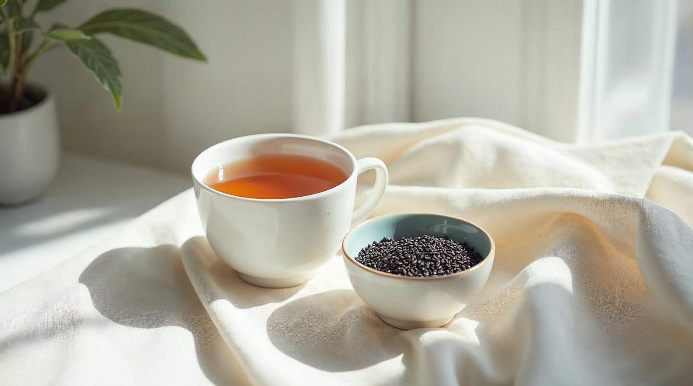
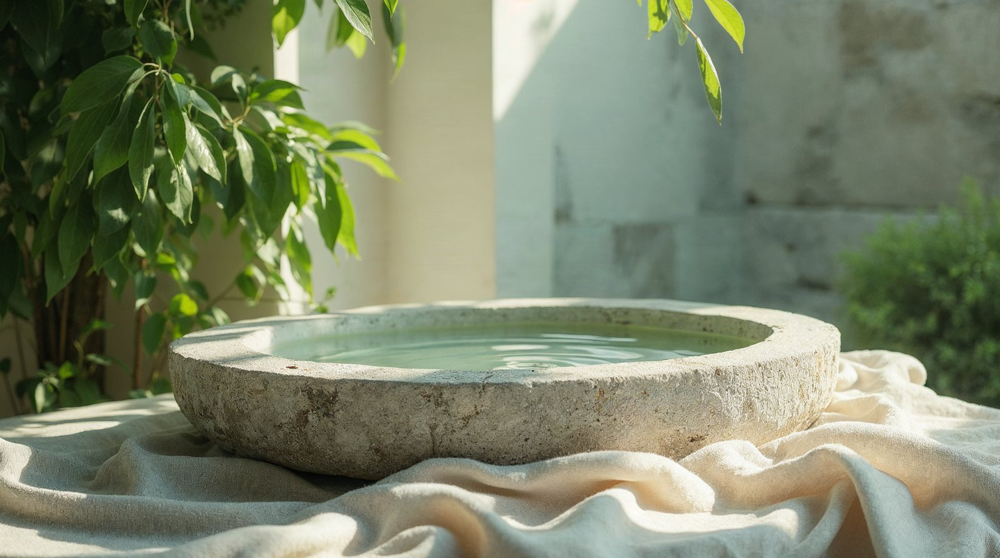
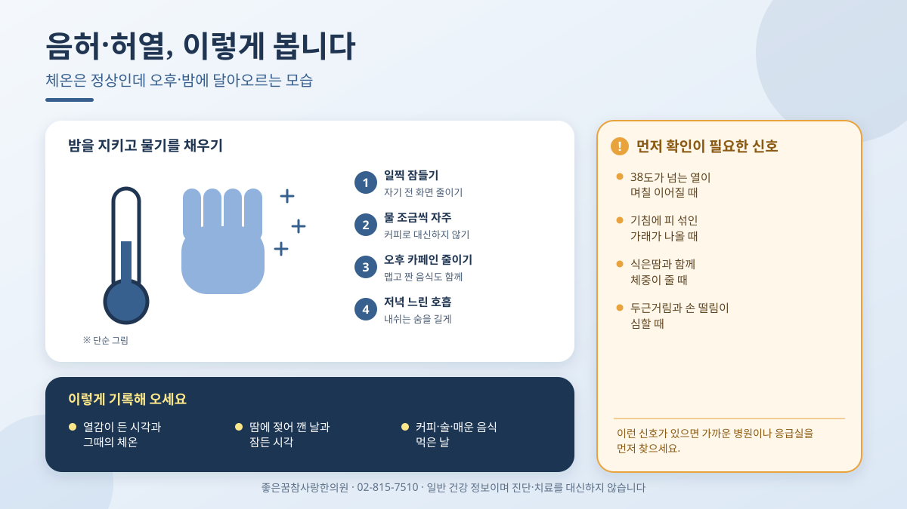

이종호 한의사 감수좋은꿈참사랑한의원 대표원장 (한의사 면허번호 19769)발행 2026-11-26 · 수정 2026-11-26
이 글의 차례
해가 기울 무렵이면 얼굴이 슬슬 달아오르고, 손바닥과 발바닥이 화끈거려 이불 밖으로 발을 내놓고 주무신다는 분이 계십니다. 체온계를 대 보면 열은 없습니다. 그런데 몸은 분명히 뜨겁고, 입은 마르고, 밤에는 자다가 땀에 젖어 깨기도 합니다.
진찰을 마치고 "음이 부족해서 생기는 열, 허열에 가까운 모습이 보여요"라고 말씀드리면 대부분 고개를 갸웃하십니다. "음이요? 열이 있다는 건가요, 없다는 건가요?" 열이 없다는데 열이라고 하니 헷갈리시는 게 당연합니다.
먼저 분명히 말씀드리겠습니다. 음허와 허열은 병명이 아닙니다. 체온계나 혈액 검사 수치로 정하는 진단명도 아닙니다. 한의학에서 오랫동안 몸의 상태를 묘사할 때 써 온 전통적인 표현이고, 진찰에서 본 여러 모습을 묶어 설명하는 말입니다.
이 글에서는 음과 허열이라는 낯선 말을 일상의 말로 풀어 보고, 진료실에서 어떤 모습을 보고 이 설명을 쓰는지, 비슷해 보이는 다른 상황과는 어떻게 나누는지, 생활에서는 무엇을 챙기면 좋은지를 차례로 말씀드리겠습니다.
음허·허열은 어떤 몸 상태를 말하나요?
한의학에서는 몸을 데우고 움직이는 쪽을 양, 식히고 적시고 가라앉히는 쪽을 음이라고 나누어 설명해 왔습니다. 낮과 밤, 불과 물처럼 서로 짝을 이루며 균형을 잡는다고 봅니다. 음은 몸속의 물기와 차분함을 아우르는 말에 가깝습니다.
음허는 이 식히고 적시는 쪽이 모자란 모습입니다. 물이 줄어든 냄비가 같은 불에서도 쉽게 달아오르듯, 몸을 식히는 힘이 모자라면 큰 열이 없어도 달아오르는 느낌이 생긴다고 설명합니다. 이렇게 모자람에서 생기는 열을 허열이라고 부릅니다.
허열은 체온계에 잡히는 발열과 다릅니다. 체온은 정상인데 몸이 뜨겁게 느껴지는 것, 특히 오후나 저녁, 밤에 얼굴과 손발바닥, 가슴 쪽이 화끈거리는 것을 가리킬 때 씁니다. 감기처럼 열이 확 오르는 모습과는 결이 다릅니다.
이 말도 사람에게 붙이는 딱지가 아닙니다. 밤샘이 이어진 시기, 갱년기 무렵, 크게 앓고 난 뒤처럼 특정한 때에 이런 모습이 짙어졌다가, 잠과 생활이 돌아오면 옅어지기도 합니다. 지금 이 시기의 몸을 묘사하는 말로 이해해 주시면 됩니다.
왜 음허 같은 상태가 생긴다고 보나요
한의학에서는 음이 잠과 휴식, 충분한 물기와 음식으로 채워지고, 밤늦은 활동과 오랜 긴장, 땀을 많이 흘리는 일, 열이 나는 병을 앓는 일로 소모된다고 설명해 왔습니다. 쓰는 쪽이 오래 많으면 모자란 쪽으로 기운다고 봅니다.
생활에서 흔히 보는 이유는 이렇습니다.
- 밤늦게까지 깨어 있거나 밤샘 근무가 잦은 생활
- 오랜 긴장과 걱정으로 마음이 쉬지 못하는 시기
- 맵고 자극적인 음식, 잦은 술자리
- 물을 적게 마시고 커피로 대신하는 습관
- 열이 나는 병을 오래 앓았거나 회복기를 건너뛴 경우
- 갱년기처럼 몸의 리듬이 크게 바뀌는 시기
밤 시간이 특히 중요하게 다뤄집니다. 한의학에서 밤은 음의 시간이라, 이때 깨어서 일하거나 화면을 보면 채워야 할 시간에 오히려 쓰게 된다고 설명합니다. 실제로 늦게 자는 생활이 오래된 분들이 오후 열감과 입마름을 함께 말씀하시는 경우가 많습니다.
나이와 계절도 영향을 줍니다. 나이가 들면서 몸의 물기가 조금씩 줄어드는 흐름, 건조한 가을과 난방이 강한 겨울에는 입과 눈, 피부의 건조함이 함께 두드러져 음허에 가까운 모습이 짙어 보이기도 합니다.
현대 의학으로 보면 이런 모습 뒤에 갱년기 변화, 갑상선 기능 항진, 수면 부족, 불안, 약의 영향 같은 이유가 숨어 있을 수 있습니다. 그래서 음허라는 설명을 드리더라도 필요하면 병원 검사를 함께 권해 드립니다.
진맥·설진·문진에서는 무엇을 함께 보나요
진맥에서는 맥의 굵기와 빠르기를 봅니다. 음허에 가까운 분은 가늘면서 조금 빠르게 뛰는 맥을 보이는 경우가 많습니다. 다만 긴장하거나 서둘러 오신 직후에도 맥은 빨라지니, 잠시 앉아 숨을 고른 뒤에 짚습니다.
설진에서는 혀의 색과 설태를 봅니다. 혀가 붉은빛이 돌고 설태가 얇거나 거의 없으며, 군데군데 벗겨지거나 잔금이 간 모습을 음허와 연결해 설명해 왔습니다. 그러나 매운 음식이나 뜨거운 음료를 먹은 직후에도 혀가 붉어 보일 수 있어서 다른 단서와 함께 봅니다.
문진에서는 달아오르는 시각이 언제인지, 손발바닥이 화끈거리는지, 입과 목이 마르는지, 밤에 땀에 젖어 깨는지, 잠들기 어렵고 꿈이 많은지, 대변이 단단한지를 여쭙습니다. 이런 대답이 맥과 혀와 같은 쪽을 가리킬 때 음허라는 설명을 조심스럽게 붙입니다.
세 가지는 서로를 확인하는 장치입니다. 혀가 붉어 보여도 생활에서 열감이나 입마름이 전혀 없다면 음허라고 말씀드리지 않습니다. 반대로 맥과 혀가 뚜렷하지 않아도 오후 열감이 몇 주씩 되풀이되면 그 이유를 다른 쪽에서 더 찾아봅니다.
생활에서 흔히 느끼는 모습
음허·허열이라는 설명을 들으시는 분들이 흔히 말씀하시는 모습은 이렇습니다. 몇 가지가 겹쳐 오래 이어지는지가 중요합니다.
- 오후나 저녁에 얼굴이 달아오르고 볼이 붉어진다
- 손바닥과 발바닥이 화끈거려 차가운 곳을 찾는다
- 물을 마셔도 입과 목이 금세 마른다
- 자다가 땀에 젖어 깨는 날이 있다
- 잠들기 어렵고 깨면 다시 잠들기 힘들다
- 대변이 단단하고 피부가 건조하다
이런 모습은 더운 날 잠깐 달아오르는 것과는 다릅니다. 시원한 방에서도 저녁이 되면 열감이 올라오고, 몇 주씩 같은 시각에 되풀이된다면 기록해 두시면 좋습니다.
열감은 감정과도 함께 움직입니다. 속상한 일이 있거나 긴장한 날 저녁에 유독 얼굴이 달아오른다면 그 날을 함께 표시해 두세요. 몸의 열과 마음의 열이 엮여 있는 경우가 생각보다 많습니다.
비슷해 보이지만 다르게 살피는 것
가장 먼저 나누는 것은 진짜 발열인지입니다. 열감이 있을 때 체온계로 재어 보시고, 37.5도를 넘는 날이 이어진다면 감염이나 다른 원인을 병원에서 먼저 확인해야 합니다. 허열은 체온이 정상인데 뜨겁게 느껴지는 모습을 말합니다.
갱년기의 열감과도 겹칩니다. 갱년기에는 시간과 상관없이 갑자기 얼굴과 가슴으로 열이 확 오르고 땀이 쏟아졌다가 금세 식는 일이 잦습니다. 음허는 오후와 밤으로 갈수록 서서히 달아오르는 모습이 더 흔합니다. 두 모습이 함께 있는 분도 많습니다.
갑상선 기능 항진은 꼭 구분해야 합니다. 열감과 함께 가슴 두근거림, 손 떨림, 이유 없는 체중 감소, 잦은 대변이 있다면 혈액 검사가 먼저입니다. 이런 경우에는 음허라는 설명보다 병원 진료를 먼저 권해 드립니다.
상열하한과도 헷갈리실 수 있습니다. 위로는 열이 오르는데 아랫배와 발은 차다면 상열하한 쪽 설명을 쓰고, 손발바닥까지 화끈거리고 입마름과 밤 식은땀이 함께 있으면 음허 쪽 설명을 씁니다.
스스로 점검해 볼 것
집에서 내 몸을 돌아보는 질문입니다. 정답을 맞히는 시험이 아니라 진료실에서 이야기할 거리를 모은다고 생각해 주세요.
- 열감이 드는 시각은 하루 중 언제인가요?
- 그때 체온계로 재 보면 몇 도인가요?
- 잠드는 시각은 대개 몇 시이고, 밤에 땀에 젖어 깨는 날이 있나요?
- 하루에 물을 몇 잔, 커피를 몇 잔 마시나요?
- 맵거나 짠 음식, 술은 일주일에 얼마나 드시나요?
질문에 답하다 보면 열감이 생활의 어느 부분과 함께 움직이는지 보이기 시작합니다. 늦은 잠이 먼저인지, 커피와 술이 먼저인지, 긴장이 먼저인지에 따라 생활에서 먼저 손볼 곳이 달라집니다. 체온을 함께 적어 두시면 허열인지 실제 발열인지 나누는 데도 큰 도움이 됩니다.
먼저 이렇게 여쭙니다
- 달아오르는 느낌은 언제부터, 하루 중 언제 가장 심한가요?
- 손발바닥, 얼굴, 가슴 가운데 어디가 가장 뜨거운가요?
- 입마름, 밤 식은땀, 두근거림이 함께 있나요?
- 잠과 대변은 어떤가요?
- 생리 주기에 변화가 있거나 갱년기 무렵인가요?
- 드시는 약이나 영양제가 있나요? 임신 중이거나 가능성이 있나요?
갱년기 증상이나 갑상선 때문에 병원에서 받으신 검사 결과지가 있다면 함께 가져와 주세요. 드시는 약 가운데 땀이나 열감에 영향을 줄 수 있는 것이 있는지도 함께 살펴봅니다.

일상에서 먼저 해 볼 수 있는 것
몸을 식히고 적시는 쪽을 채우는 일은 밤을 지키는 데서 시작합니다. 아래 가운데 지금 가장 쉬운 하나부터 골라 보세요.
- 밤 12시 전에 잠자리에 들고 잠들기 한 시간 전에는 화면 줄이기
- 물을 한 번에 많이보다 조금씩 자주 마시기
- 오후 늦게는 커피와 진한 차를 줄이기
- 맵고 짠 음식과 술은 횟수부터 줄이기
- 뜨거운 탕이나 사우나에 오래 머물지 않기
- 저녁에 가벼운 스트레칭과 느린 호흡으로 몸을 가라앉히기
땀을 많이 빼는 운동보다는 걷기, 가벼운 요가처럼 숨이 조금 차는 정도의 움직임이 편합니다. 운동 뒤 땀을 많이 흘렸다면 물을 충분히 드세요.
침실은 너무 덥지 않게, 습도는 적당히 맞춰 주세요. 난방이 강한 겨울에는 가습기나 젖은 수건 하나만으로도 입마름이 한결 덜하다고 말씀하시는 분이 많습니다.
마음이 쉬지 못하는 것도 열감과 가깝습니다. 잠들기 전 걱정을 종이에 적어 내려놓고, 내쉬는 숨을 들이쉬는 숨보다 조금 길게 하는 시간을 5분만 가져 보세요.
식사는 너무 맵거나 기름지지 않게, 제철 채소와 과일, 두부, 생선처럼 담백한 반찬을 곁들이면 좋습니다. 저녁은 잠들기 세 시간 전쯤 마치고, 늦은 밤 야식은 줄여 보세요. 속이 편해야 잠도 깊어집니다.
한의원에서 함께 살필 수 있는 경우
- 검사는 괜찮다는데 오후 열감과 손발바닥 화끈거림이 이어지는 경우
- 밤 식은땀과 입마름으로 잠이 자주 깨는 경우
- 갱년기 무렵 열감과 잠의 변화가 함께 온 경우
- 크게 앓고 난 뒤 입이 마르고 쉽게 달아오르는 경우
좋은꿈참사랑한의원에서는 진맥과 설진, 문진을 마친 뒤 지금의 모습을 쉬운 말로 먼저 설명드립니다. 음허라는 말을 쓰더라도 그것이 밤의 생활, 물, 긴장 가운데 무엇과 이어지는지를 함께 말씀드립니다.
진찰한 내용에 따라 침, 생활 조정, 한약 상담 가운데 지금 상태에 맞는 것을 정합니다. 한약을 상의할 때는 드시는 약과 영양제를 모두 확인하고 신중하게 정합니다. 임신 중이거나 가능성이 있다면 먼저 알려 주시고 산부인과 선생님과도 상의해 주세요.
갱년기 증상으로 산부인과에서 약을 드시거나 갑상선 약을 드시는 분은 그대로 이어 가시면 됩니다. 한의원 진료는 그 곁에서 잠과 열감, 생활의 리듬을 함께 살핀다고 생각해 주세요.
이렇게 기록해 오시면 상담이 쉬워집니다
- 열감이 든 시각과 그때의 체온
- 잠든 시각, 깬 횟수, 땀에 젖어 깬 날
- 커피, 술, 매운 음식을 먹은 날
- 생리 주기나 갱년기 증상의 변화
- 긴장하거나 바빴던 날
2주 정도 적어 보시면 열감이 몰리는 시각과 생활 사이의 연결이 보이기 시작합니다. 그 흐름이 다음에 무엇을 바꿀지 정하는 실마리가 됩니다. 빈칸이 있어도 괜찮으니 편하게 적어 주세요.

음허·허열이라는 말을 들으셨다면
음허와 허열은 몸이 '밤을 지켜 달라, 물기를 채워 달라'고 보내는 신호를 한의학의 말로 옮긴 것이라고 생각해 주세요. 무서운 병명이 아니라, 쉼과 활동의 균형을 돌아보자는 제안입니다.
이번 주에는 잠드는 시각 30분 앞당기기, 오후 커피 한 잔 줄이기 가운데 하나만 골라 보세요. 다음에 오시면 맥과 혀를 다시 보면서 열감이 어떻게 움직였는지 함께 살펴보겠습니다.
가족과 함께 오셔서 같은 설명을 들으시면 집에서 저녁 시간을 바꾸기가 한결 수월합니다. 늦은 야식과 늦은 잠은 혼자보다 가족이 함께 줄일 때 오래갑니다.
이런 증상은 먼저 확인이 필요합니다
- 체온계로 38도가 넘는 열이 며칠 이어지거나 기침에 피 섞인 가래가 나오는 경우
- 밤 식은땀과 함께 이유 없이 체중이 줄거나 가슴 두근거림과 손 떨림이 심한 경우
이런 신호가 있으면 한의원보다 가까운 병원이나 응급실을 먼저 찾으세요.
함께 읽으면 좋은 글
- 자고 일어나면 베개와 잠옷이 젖어 있는 밤 식은땀(도한)은 어떻게 살피나요?
- 얼굴이 달아오르고 땀이 갑자기 날 때는 어떤 점을 살펴보나요?
- 물을 마셔도 입이 바싹 마르는 구강건조증은 어떻게 살피나요?
- 갱년기에 들어서며 잠들기 어렵고 새벽에 자꾸 깨는 갱년기 불면은 어떻게 살피나요?
- 혀에 하얗거나 노란 막이 끼는 설태는 무엇을 뜻하나요?

여쭙는 것
- 달아오르는 느낌은 언제부터, 하루 중 언제 가장 심한가요?
- 손발바닥, 얼굴, 가슴 가운데 어디가 가장 뜨거운가요?
- 입마름, 밤 식은땀, 두근거림이 함께 있나요?
생활에서 해 볼 것
- 밤 12시 전에 잠자리에 들고 잠들기 한 시간 전에는 화면 줄이기
- 물을 한 번에 많이보다 조금씩 자주 마시기
- 오후 늦게는 커피와 진한 차를 줄이기
한의원에서 함께 살필 것
- 검사는 괜찮다는데 오후 열감과 손발바닥 화끈거림이 이어지는 경우
- 밤 식은땀과 입마름으로 잠이 자주 깨는 경우
- 갱년기 무렵 열감과 잠의 변화가 함께 온 경우
먼저 확인이 필요한 신호
- 체온계로 38도가 넘는 열이 며칠 이어지거나 기침에 피 섞인 가래가 나오는 경우
- 밤 식은땀과 함께 이유 없이 체중이 줄거나 가슴 두근거림과 손 떨림이 심한 경우
한눈에 보는 표
| 구분 | 핵심 |
|---|---|
| 여쭙는 것 | 달아오르는 느낌은 언제부터, 하루 중 언제 가장 심한가요? 손발바닥, 얼굴, 가슴 가운데 어디가 가장 뜨거운가요? |
| 생활에서 해 볼 것 | 밤 12시 전에 잠자리에 들고 잠들기 한 시간 전에는 화면 줄이기 물을 한 번에 많이보다 조금씩 자주 마시기 |
| 한의원에서 함께 살필 것 | 검사는 괜찮다는데 오후 열감과 손발바닥 화끈거림이 이어지는 경우 밤 식은땀과 입마름으로 잠이 자주 깨는 경우 |
| 먼저 확인이 필요한 신호 | 체온계로 38도가 넘는 열이 며칠 이어지거나 기침에 피 섞인 가래가 나오는 경우 밤 식은땀과 함께 이유 없이 체중이 줄거나 가슴 두근거림과 손 떨림이 심한 경우 |
자주 묻는 질문
허열이라는데 체온계로 재면 열이 없어요. 괜찮은 건가요?
허열은 체온이 정상인데 몸이 뜨겁게 느껴지는 모습을 한의학에서 설명하는 말이라 체온이 정상일 수 있습니다. 다만 37.5도를 넘는 날이 이어진다면 다른 원인이 있는지 병원에서 먼저 확인해 보세요.
음허는 갱년기와 같은 말인가요?
같은 말은 아닙니다. 갱년기는 몸의 변화 시기를 말하고, 음허는 진찰에서 보이는 열감, 입마름, 밤 식은땀 같은 모습을 묶어 부르는 말입니다. 갱년기에 이런 모습이 함께 나타나는 경우가 많아 나란히 살핍니다.
몸에 열이 많다고 하면 찬 음식을 많이 먹는 게 좋은가요?
찬 음식으로 식히려 하면 소화가 불편해지는 분이 많습니다. 차갑게 먹기보다 밤을 일찍 맞고, 물을 조금씩 자주 마시고, 맵고 자극적인 음식을 줄이는 쪽을 먼저 권해 드립니다.
음허라는 말은 평생 따라다니나요?
정해진 체질이 아니라 시기에 따라 달라지는 상태로 봅니다. 잠과 생활의 리듬이 돌아오면 그 모습이 옅어지는 경우가 많아서 시간을 두고 다시 살핍니다.
좋은꿈참사랑한의원은 재진 때 지난번 이야기부터 이어서 여쭙니다. 진료시간과 예약은 오시는 길에서 확인하세요.
어디서 상담받을 수 있나요?
좋은꿈참사랑한의원은 서울 동작구 만양로2길 2 신성빌딩 3층·5층(서울 동작구 상도동, 7호선 상도역 3번 출구 근처)에 있습니다. 한의사 3명(이종호 대표원장, 조영기 수석진료원장, 정원영 진료원장)이 진료합니다. 진료시간은 평일 09:30~20:00(점심 13:00~14:00), 토·일·공휴일 09:30~15:00이며, 방문 전 전화로 확인을 권합니다. 예약은 네이버 예약, 카카오톡 상담, 전화 02-815-7510로 받습니다.
이 글은 일반적인 건강 정보이며 개인의 진단이나 치료를 대신하지 않습니다. 증상이 있거나 복용 중인 약이 있다면 진료를 통해 확인하세요. 치료 효과는 개인마다 다를 수 있습니다.
작성 기준: 일반적으로 알려져 있는 건강 정보를 참고해 정리했습니다(대표원장 감수). 증상 기록은 1~2주 동안 하루 1회, 비슷한 시간에 적어 오시면 지난 상태와 비교하기 쉽습니다.